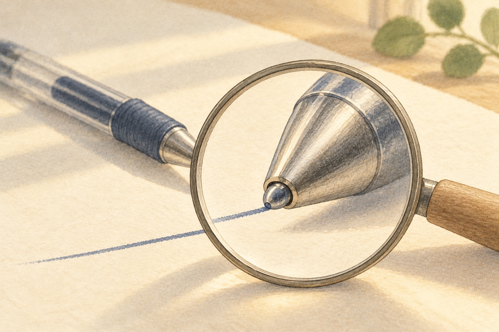

01What is hiding at the end of a pen?

Look closer. Look for the tiny round ball where ink meets paper.
A little explanation. The tiny ball in many ballpoint pens is tungsten carbide. It rolls ink onto paper and resists wear. People make this material by joining tungsten with carbon, then pressing powder and heating it very hot. This heating step is called sintering. Usually, a little cobalt metal binds the grains together: cemented carbide.
Try this. Trace the rolling ball in the picture, then point to the line it leaves.